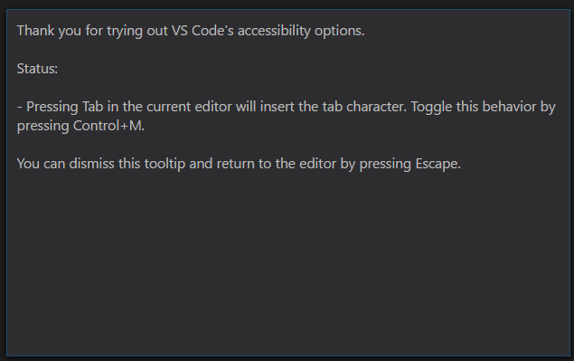

Accessibility
Visual Studio Code has many features to help make the editor accessible to all users. Zoom and High Contrast colors improve editor visibility, keyboard-only navigation allows use without a mouse and the editor has been optimized for screen readers.
Zoom
You can increase the Zoom level in VS Code with the View > Zoom In command (kb(workbench.action.zoomIn)). The zoom level increases by 20% each time the command is executed. The View > Zoom Out (kb(workbench.action.zoomOut)) command lets you decrease the Zoom level.

Persisted Zoom Level
When you adjust the zoom level with the View > Zoom In / Out commands, the zoom level is persisted in the window.zoomLevel setting. The default value is 0 and each increment increases the zoom level by 20%.
High Contrast Theme
We support a High Contrast color theme on all platforms. Use File > Preferences > Color Theme to display the Select Color Theme dropdown and select the High Contrast theme.

Keyboard Navigation
You will find that VS Code provides an exhaustive list of commands in the Command Palette (kb(workbench.action.showCommands)) so that you can run VS Code without using the mouse. Press kb(workbench.action.showCommands) then type a command name (e.g. ‘git’) to filter the list of commands.
VS Code also has many preset keyboard shortcuts for commands. These are displayed to the right of the command in the Command Palette.

You can also set your own keyboard shortcuts. File > Preferences > Keyboard Shortcuts brings up the Default Keyboard Shortcuts in the left pane and your customizable keybindings.json on the right. See Key Bindings for more details on customizing or adding your own keyboard shortcuts.
Tab Navigation
You can use the kbstyle(Tab) key to jump between VS Code UI controls. Use kbstyle(Shift+Tab) to tab in reverse order. As you tab through the UI controls, you can see an indicator around the UI element once the element gains focus.
Some areas that support Tab navigation are:
- The View switcher (Files, Search, Git, Debug)
- The header of collapsible sections in a view to expand/collapse
- Actions in views and sections
- Actions for items in the tree
Tab trapping
By default, pressing the kbstyle(Tab) within a source code file inserts the Tab character (or spaces depending on your Indentation setting) and does not leave the open file. You can toggle the trapping of kbstyle(Tab) with kb(editor.action.toggleTabFocusMode) and subsequent kbstyle(Tab) keys will move focus out of the file. When default kbstyle(Tab) trapping is off, you will see an indicator in the Status Bar.

You can also toggle kbstyle(Tab) trapping from the Command Palette (kb(workbench.action.showCommands)) with the Toggle Use of Tab Key for Setting Focus action.
Read-only files never trap the kbstyle(Tab) key. The Integrated Terminal panel respects the kbstyle(Tab) trapping mode and can be toggled with kb(editor.action.toggleTabFocusMode).
Screen Readers
VS Code supports screen readers in the editor using a strategy based on paging the text. We have tested using the NVDA screen reader, but we expect all screen readers to benefit from this support.
The Go to Next/Previous Error or Warning actions (kb(editor.action.marker.next) and kb(editor.action.marker.prev)) allow screen readers to announce the error or warning messages.
When the suggestions pop up, they will get announced to screen readers. It is possible to navigate the suggestions using kbstyle(Alt+Up) and kbstyle(Alt+Down), you can dismiss the suggestions with kbstyle(Shift+Escape) and if suggestions get in your way, you can disable the auto-popup of suggestions with the editor.quickSuggestions setting.
Accessibility Help
You can press kb(editor.action.showAccessibilityHelp) to trigger the Show Accessibility Help dialog while in an editor to check the state of various accessibility options in VS Code:

Debugger Accessibility
The VS Code debugger UI is user accessible and has the following features:
- Changes in debug state are read out (e.g. ‘started’, ‘breakpoint hit’, ‘terminated’, …).
- All debug actions are keyboard accessible.
- Both the Debug View and Debug Console support Tab navigation.
- Debug hover is keyboard accessible (
kb(editor.action.showHover)).
Current Known Issues
VS Code has some known accessibility issues depending on the platform.
Windows
You can not use the keyboard (right, left arrow keys) to move between top-level menu items (File, Edit, View, etc). This is due to Electron issue #2504.
Mac
There is limited screen reader support for the editor with VoiceOver.
Linux
There is no screen reader support for the editor.
Next Steps
Read on to find out about:
- Visual Studio Code Basics - a quick orientation of VS Code
- Editing Evolved - from code colorization & multi-cursor to IntelliSense